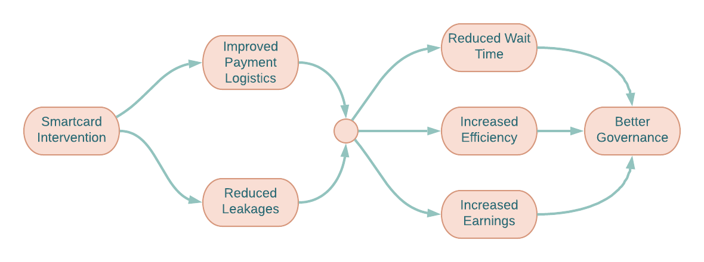
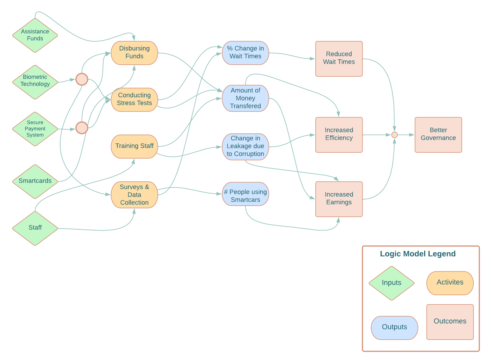
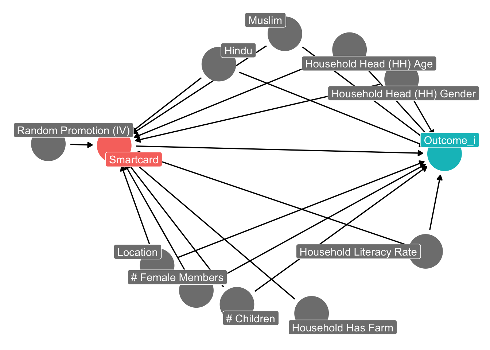

Abstract
Developing countries often face challenges in efficiently delivering social assistance programs due to issues such as leakages and corruption. This study focuses on the Smartcard program, a biometric payment system implemented in Andhra Pradesh, India, to enhance the delivery of social welfare programs. The objective is to expand this program to three other Indian states using synthetic data, with a specific focus on the National Rural Employment Guarantee Scheme (NREGS). The primary goal is to evaluate the impact of the Smartcard program on governance, including reducing leakages, wait times, and corruption.
The study employs an instrumental variable design, randomly selecting 500 panchayats as a representative sample. Of these, 250 panchayats are selected as promotion locations for Smartcard enrollment. Weekly surveys are conducted to collect data on personal characteristics and program outcomes. The results suggest that the Smartcard intervention reduces leakages, wait times, and corruption, with statistically significant effects.
This has implications for poverty reduction, enhanced trust in government services, and the potential to improve social welfare delivery systems in similar contexts. The study utilizes a rigorous instrumental variable approach to address potential biases, providing credible estimates of the program’s impact.
Introduction
Developing countries allocate a significant portion of their annual budget to social assistance programs, but most of these funds fail to reach their intended recipients due to inefficiencies resulting from leakages and corruption. In 2016, India allocated $70 billion to social assistance programs (Govt. of India 2017), but historical estimates suggest that around 51% of these funds were lost due to inadequate delivery systems (Imbert, Clement, and John Papp. 2016; Govt of India 2005). One potential solution to improve assistance delivery is the implementation of digital payment systems that directly deposit government funds into the beneficiaries’ bank accounts, thereby reducing bureaucracy. To enhance the system’s security, biometric authentication can be employed.
In 2006, the state government of Andhra Pradesh (GoAP) introduced the Smartcard system, a large-scale biometric payments system, to enhance the delivery of two major social welfare programs: the National Rural Employment Guarantee Scheme (NREGS) and Social Security Pensions (SSP). NREGS guarantees 100 days of wage employment per year to every rural household, while SSP provides payments to elderly and disabled individuals below the poverty line. However, due to implementation issues, the program was initially shut down. In 2010, J-PAL South Asia partnered with GoAP and relaunched the program in eight districts of Andhra Pradesh. The objective was to evaluate the effectiveness of the Smartcard system by running a large-scale randomized evaluation involving 8,000 households. The program aimed to improve governance by reducing corruption and enhancing efficiency using biometric authentication and secure digital payment systems. This initiative increased access to governmental benefits for citizens, and reduced costs associated with manual processes and fraud.
Building upon this previous work, our pre-registered study proposes to expand the biometric smartcard program introduced by Andhra Pradesh to three other Indian states using synthetic data. The expanded program aims to fully implement the biometric smartcard payment system in these states, specifically targeting the NREGS welfare program. Our plan involves equipping all panchayats (village councils) in the three states with payment technology and converting local Point of Service (PoS) locations into Smartcard facilities where all payments will be processed through the Smartcard system. If beneficiaries are not enrolled in the program, they will continue to receive payments in cash, similar to the previous system. Workers can enroll in the program, register their biometric information, and receive new Smartcards at designated stations. The PoS devices will store the biometric information of all enrolled workers locally, facilitating transaction verification without internet access.
The primary goal of this paper is to evaluate the impact of the Smartcard program on governance. Good governance ensures the efficient and equitable delivery of governmental processes, promoting public welfare. We anticipate a reduction in leakages, corruption, and wait times for the program’s beneficiaries. These improvements are expected to enhance overall efficiency, increase earnings, and foster greater trust in government welfare measures.
To evaluate the program’s impact on system leakages, wait times, and corruption, we employ an instrumental variable design. Our study involves randomly selecting 500 panchayats from the three states as a representative sample. Following program implementation, we randomly select 250 out of the 500 sample panchayats as the promotion locations. All households previously enrolled in the NREGS program will receive a promotion and information on enrolling in the Smartcard program. Subsequently, we conduct weekly surveys in all 500 panchayats over four weeks, gathering data on personal characteristics, leakages, wait times, and corruption events. By utilizing randomized promotion as a valid instrument, we find that the Smartcard intervention leads to a reduction in leakages, wait times and corruption.
Code
# import packages
library(haven)
library(tidyverse)
library(dplyr)
library(fitdistrplus)
library(cascsim) #truncated gamma distribution
library(EnvStats) #truncated log-normal distribution
library(psych)
library(truncnorm)
library(scales)
library(magrittr)
library(estimatr)
library(ggdag)
library(dagitty)
library(modelsummary)
library(fixest)
library(lfe)Program Theory and Implementation
Program Theory and Impact Theory Graph
The program theory is that biometric authentication and secure payment systems can improve governance by reducing leakages in the delivery systems and reducing payment delays without adversely affecting program access.
The theory, based on previous research (World Bank 2003; Pritchett 2010, Reinikka and Svensson 2004; Programme Evaluation Organisation 2005; Niehaus and Sukhtankar 2013b) assumes that corruption and leakages are prevalent in government services in developing countries, leading to inefficiencies in assistance delivery systems. By implementing biometric authentication and secure payment systems, the government can ensure that the correct individuals receive the correct payments and services. The Smartcards intervention has a two-fold effect. First, it changes the institutions responsible for managing the funds by eliminating a few intermediaries and moves the point of payment closer to the recipient. Second, it introduces biometric authentication which facilities transparency in the system by providing a secure, tamperproof record of who has received services and payments. This can help to reduce corruption and increase accountability.
Similar to Muralidharan et al. 2016, we consider two main dimensions of impact: payment logistics, and leakages. We also consider multiple scenarios surrounding each dimension. First, the payment logistics could improve or worsen. It could naturally improve the system by moving the point of payment closer to the village, or the program could slow down the process due to technical problems like malfunctioning authentication devices or absence of technical staff. Improving payment logistics will affect the wait times of beneficiaries to access the funds. Secondly, the program could reduce or fail to reduce leakages. Theoretically, smartcards should reduce payments to ghost recipients and forbid officials to collect payments in the name of real beneficiaries as the beneficiaries must be present to pass the biometric test. But there could be technical loopholes in the payment architecture that could disprove the claim of an absolute secure system. Moreover, the assistance programs’ access could improve or suffer. In case of NREGS, local officers decide projects and generate employment. Eliminating opportunities to seek rent may disincentivize officials and they might reduce access. On the other hand, the NREGS funds would directly go towards to the development projects that were originally intended thus creating rural assets and generating more employment.

Logic model

- Inputs:
- Federal and state assistance funds: These funds are required to finance the implementation of the Smartcard intervention as well as NGREGS transfer payments.
- Biometric authentication technology: This technology is required to verify the identity of beneficiaries and ensure that payments are disbursed to the correct individuals.
- Banks: Banks are required to help manage the payment system and ensure that payments are securely and efficiently disbursed to beneficiaries.
- Secure payment systems: Secure payment systems are required to ensure that payments are not lost or stolen during the disbursement process.
- Smartcards: Smartcards are required to store the payment information of beneficiaries and facilitate the payment process.
- Technical staff: Trained staff are required to collect and manage beneficiary information, conduct stress tests, and implement the payment system effectively and efficiently.
- Survey support staff: Survey staff are required to conduct randomized promotion and conduct weekly surveys to collect information on variables of interest.
- Activities:
- Training staff for data collection and management of payment systems effectively and efficiently
- Collecting beneficiary personal and biometric information to verify individuals.
- Conducting stress tests on the digital payment system to ensure its smooth functioning.
- Implementation of secure payment systems to disburse payments to the correct individuals:
- Conducting door-to-door random promotions and provide information about the program.
- Conducting weekly surveys to collect data.
- Outputs:
- Number of people using Smartcard technology:
- Percentage change in average wait times at payment centers.
- Amount of money credited for every beneficiary and payment type.
- Amount of money saved: The amount of money saved is a measure of the program’s efficiency and cost-effectiveness.
- Change in leakages and corruption in the system:
- Outcomes:
- Reduced wait times: The Smartcard intervention is designed to reduce wait times at payment centers and payment delays which can save time and reduce the burden on beneficiaries.
- Increased earnings for the beneficiaries: The Smartcard intervention is designed to improve the delivery of funds for welfare programs, which can increase the earnings of beneficiaries.
- Increased efficiency: The Smartcard program will deliver reduce leakage, ensuring beneficiaries receive more funds in less time without allocating more budget to NREGS.
- Improved trust in government services: The Smartcard intervention is designed to improve the delivery of funds for welfare programs and ensure transparency in the payment system, which can improve trust in government.
Outcome and Causation
Main outcome
The goal of this paper is to evaluate the smartcard program’s effect on governance. Good governance is critical to achieving the goals of development. Moreover, strong governance ensures the efficiency and smoothness of governmental processes in achieving goals directed towards public welfare. It means that the government can deliver what they promised to the public in a fair and efficient way. We expect the smartcard intervention to reduce leakages, corruption and wait times for the beneficiaries. This will lead to improved efficiency, increased earnings and greater trust in government welfare measures.
Measurement
Outcome: Better Governance
Improved wait times
Reduction in corruption and abuse of power
Reduction in leakages in the payment system
Better implementation of governmental plans or improved effectiveness
Increased transparency
Budget management
We think that the most important attributes of better governance are reduced wait times to access promised goods or services, reduction in leakages, and reduction in corruption and abuse of power. These aspects can be best quantified by observational and survey data. Leakages and delays in payments, crucial aspects of governance, should be the focus of the evaluation study. Corruption is also an important aspect of good governance, but it is our opinion that study participants might not be completely transparent about corruption related experiences. Budget management is subject to political ideology and economic situation. On the other hand, transparency can be difficult to measure.
Attribute 1: Reduction in Leakages
Measurable definition: Change in money value allocated and the money value actually received per person. Money value here is the rupee (or dollar) value actually received by the beneficiary. In other projects, money value can be the dollar value of the services received.
Ideal measurement: Difference between the actual official amount of money allocated and the actual money received by the beneficiary.
Feasible measurement: Difference between the muster-roll recorded amount of money allocated to the beneficiary and the money received by beneficiary based on surveys. Officials can manipulate muster rolls to under record work and pocket the difference. In an ideal world, we cannot know the true allocated value.
Measurement of program effect: If the promotion of the smartcard program is randomized, the leakage amount will reflect the local average treatment effect of the program on the compliers.
Attribute 2: Reduction in Wait Time
Measurable definition: Number of days between completing and work and receiving the payment. Moreover, number of minutes spent at the point of service (PoS) to collect the amount.
Ideal measurement: In an ideal setting, conduct a randomized trial on the entire population. Post treatment, survey all the people and measure the wait times people in each group experienced before receiving their full promised amount of money.
Feasible measurement: Conduct baseline surveys before rolling out the smartcard program and randomizing promotions and conducting endline surveys after the intervention to record the wait times of people.
Measurement of program effect: Similar leakages, if the promotion is random, wait times would be the local average treatment effect of the smartcard program.
Attribute 3: Reduction in Corruption and Abuse of Power
Measurable definition: Change in number of corruption incidences and average money value of corruption.
Ideal measurement: In an ideal world, conduct a randomized trial on the entire population and measure the corruption incidences and per capita corruption amount for both the groups. The difference in these two parameters would be the program effect.
Feasible measurement: Conduct a small-scale randomized promotion of the smartcard program and measure the number of corruption incidences and average corruption value.
Measurement of program effect: As the randomized promotion is a valid instrument, the feasible measures would reflect the local average treatment effect of the smartcard program.
Data and Analysis
Identification Strategy
Similar to Muralidharan et al. 2016, we assert causal claims that the Smartcard intervention will lead to reduced leakages, wait times, and corruption for beneficiary households. In earlier leakage-prone systems, the funds were released by the government and flowed through multiple intermediaries to reach the beneficiary. But in the new Smartcard system, the worker can directly receive funds with just a single third-party processing all the transactions. This leads to fewer leakages in the system as people cannot game it by withdrawing money in the name of ghost recipients. Moreover, officers have fewer chances to engage in corruption as funds are digitally transferred to the end user’s bank account. Further, the Smartcard intervention will improve payment logistics by reducing wait times and delays in payment collection. Smartcard holders will not be bothered by cash shortages at the PoS as money would be directly deposited into their accounts. Finally, the biometric cards would aid in quicker verifications at the PoS and reduce wait times in queues.
A host of household-level characteristics influence enrollment into the Smartcard program, reduction in leakages, wait times and corruption events. Some of the observable covariates include location, family size, household literacy rate, religion, assets, and others. Controlling for these covariates is a possible solution, but it does not paint the full causal picture. The NREGS program has a universal access and hence it is fair to provide universal access to the Smartcard program that facilitates the NREGS welfare payments. In this scenario, we suspect that households that enroll into the Smartcard intervention are fundamentally different than the households that do not enroll. For instance, poor households with fewer job opportunities or literate households would be more likely to enroll into the program. There exists a host of household and geographic characteristics that influence enrollment into the program and the outcomes. The universal nature of the program leads to self-selection bias. Additionally, the unobserved household and governmental characteristics lead to omitted variable bias. To tackle these challenges, we introduce the instrumental variable design by using randomized promotion as an instrument. Randomized promotion design closes all the backdoors and provides a local average treatment effect for the compliers that enroll in the Smartcard program after receiving the promotion.
The instrumental variable approach isolates the causal effect of the program on the outcome by using the variation in the treatment induced by the instrument. By comparing the outcomes of households who received treatment through the instrument with those who did not receive treatment through the instrument, we can estimate the causal effect of the program on the outcomes of choice.
Specifically, the randomized promotion ensures that the distribution of observable and unobservable characteristics between the treatment and control groups is balanced, reducing the potential for selection bias. Furthermore, the instrumental variable approach addresses endogeneity by focusing on the exogenous variation in the randomized promotion, rather than the endogenous relationship between the program and outcomes, thus isolating the causal effect of the program on the outcomes of interest. This approach allows us to obtain an unbiased estimate of the causal effect of the program, even in the presence of selection bias and endogeneity.
Our identification strategy takes the form of two-staged least squares (2SLS) instrumental variable. In the first stage, we estimate the effect of randomized promotion on the endogenous smartcard enrollment. Hence, we estimate:
\[ \text{Smartcard}= \beta_{0} + \beta \text{Promotion} + \gamma X + u \] where \(\text{Smartcard}\) is a binary indicator of whether a household enrolled into the program, and \(X\) is a vector of covariates.
The general form of the second stage least squares is as follows: \[ \text{Outcome}_i = \beta_{0_i} + \beta_i \hat{\text{Smartcard}} + \gamma_i X + \epsilon_i\]
Where \[\text{Outcome }_i = \{\text{Leakage}, \text{Queue Wait Time }, \text{Payment Delay}, \text{Corruption} \}\]
Overall, the instrumental variable approach using randomized promotion provides a rigorous and credible method for estimating the causal effects of the smartcard program on the outcomes of interest, while also addressing potential issues of selection bias and endogeneity.
A DAG for the outcome is as follows:
Code
# Outcome_i DAG
iv_dag <- dagitty('dag {
bb="-1.129,-1.666,1.129,1.666"
"# Children" [pos="-0.100,-0.416"]
"# Female Members" [pos="-0.295,-0.335"]
"Household Has Farm" [pos="0.258,-0.469"]
"Household Head (HH) Age" [pos="0.440,1.076"]
"Household Head (HH) Gender" [pos="0.690,0.902"]
"Household Literacy Rate" [pos="0.805,-0.106"]
"Random Promotion (IV)" [pos="-1.005,0.524"]
Hindu [pos="-0.187,0.991"]
Outcome_i [outcome,pos="0.896,0.466"]
Location [pos="-0.483,-0.189"]
Muslim [pos="0.130,1.169"]
Smartcard [exposure,pos="-0.689,0.514"]
"# Children" -> Outcome_i
"# Children" -> Smartcard
"# Female Members" -> Outcome_i
"# Female Members" -> Smartcard
"Household Has Farm" -> Smartcard
"Household Head (HH) Age" -> Outcome_i
"Household Head (HH) Age" -> Smartcard
"Household Head (HH) Gender" -> Outcome_i
"Household Head (HH) Gender" -> Smartcard
"Household Literacy Rate" -> Outcome_i
"Household Literacy Rate" -> Smartcard
"Random Promotion (IV)" -> Smartcard
Hindu -> Outcome_i
Hindu -> Smartcard
Location -> Outcome_i
Location -> Smartcard
Muslim -> Outcome_i
Muslim -> Smartcard
Smartcard -> Outcome_i
}
')
ggdag_status(iv_dag, text = FALSE, use_labels = "name") +
guides(fill = "none", color = "none") +
theme_dag()
Hypotheses
We formulate the following hypothesis and test it in the subsequent sections:
\(\textbf{H1}\): The Smartcard program causes leakages to decrease.
\(\textbf{H2}\): The Smartcard program causes payment delays (in number of days to receive payment) to decrease.
\(\textbf{H3}\): The Smartcard program causes waiting time in queue (in minutes) to decrease.
\(\textbf{H4}\): The Smartcard program reduces incidences of corruption.
Data
We propose to use a mix of administrative and survey data to estimate the causal link between the program and the outcomes of interest. We plan to conduct weekly survey for a 4-week period to measure the household level weekly payments received, time spent (in minutes) at the PoS, days between work is completed and payment is received, and corruption incidences. We will compare the weekly payments received to the official disbursement data to estimate the household level leakage in the system, the amount lost in inefficiencies or corruptions. Alongside, we will collect data on household characteristics like number of children, number of females in the household, household literacy rate, religion, assets like farmland, and household head age and gender.
Code
set.seed(1234)
n_household <- 100000
n_panchayats <- 500
iv_data <- tibble(
household_ID = factor(1:n_household),
panchayat_ID = factor(sample(1:n_panchayats, n_household, replace = TRUE)),
state_ID = factor(sample(1:3, n_household, replace = TRUE))) %>%
mutate(
off_week_1 = rlnormTrunc(n_household, meanlog = log(500),
sdlog =0.6, min = 0, max = 4000),
off_week_2 = rlnormTrunc(n_household, meanlog = log(450),
sdlog =0.6, min = 0, max = 4000),
off_week_3 = rlnormTrunc(n_household, meanlog = log(450),
sdlog =0.6, min = 0, max = 4000),
off_week_4 = rlnormTrunc(n_household, meanlog = log(400),
sdlog =0.6, min = 0, max = 4000),
week_1 = rlnormTrunc(n_household, meanlog = log(450),
sdlog =0.6, min = 0, max = 3000),
week_2 = rlnormTrunc(n_household, meanlog = log(400),
sdlog =0.6, min = 0, max = 3400),
week_3 = rlnormTrunc(n_household, meanlog = log(375),
sdlog =0.6, min = 0, max = 3000),
week_4 = rlnormTrunc(n_household, meanlog = log(350),
sdlog =0.6, min = 0, max = 3000)) %>%
mutate(off_total_amount = off_week_1 + off_week_2 + off_week_3 + off_week_4 +
rnorm(n_household, 0, 10),
total_amount = week_1 + week_2 + week_3 + week_4 + rnorm(n_household, 0, 10),
leakage_base = off_total_amount - total_amount)
promotion_panchayats <- sample(1:n_panchayats, round(n_panchayats / 2), replace = FALSE)
iv_data <- iv_data %>%
# Randomized Promotion
mutate(promotion = ifelse(panchayat_ID %in% promotion_panchayats, TRUE, FALSE)) %>%
# Potential Confounders
mutate(location = panchayat_ID,
num_members = round(rtruncnorm(n_household, a = 0, b = 20,
mean = 4, sd = 1)),
farm = rbinom(n_household, 1, 0.1),
children = round(rtruncnorm(n_household, a = 0, b = 10,
mean = 2, sd = 1)),
household_literacy_rate = rtruncnorm(n_household, a = 0, b = 1,
mean = 0.5, sd = 0.2),
female_member = round(rtruncnorm(n_household, a = 0, b = 10,
mean = 1, sd = 1)),
hindu = rbinom(n_household, 1, 0.8),
muslim = ifelse(hindu == 1, 0, rbinom(1, 1, 0.1)),
other_religion = ifelse(hindu == 1 | muslim == 1, 0, 1),
hh_age = round(rtruncnorm(n_household, a = 18, b = 80,
mean = 35, sd = 10)),
hh_male = rbinom(n_household, 1, 0.9)
) %>%
mutate(promotion_effect = promotion * 6,
# Agricultural Locations
farm_effect = -0.09 * farm,
children_effect = 0.03 * children,
literacy_effect = - 0.01 * household_literacy_rate,
female_effect = 0.02 * female_member,
hindu_effect = 0.03 * hindu,
muslim_effect = ifelse(location %in% c(2, 6, 7), 0.005 * muslim, -0.01 * muslim),
other_effect = - 0.02 * other_religion,
hh_age_effect = 0.02 * hh_age,
hh_male_effect = 0.04 * hh_male,
smartcard_score = 0 + promotion_effect +
farm_effect + children_effect +
literacy_effect + female_effect + hindu_effect +
muslim_effect + other_effect + hh_age_effect + hh_male_effect +
rnorm(n_household, 0, 0.2),
smartcard_probability = scales::rescale(smartcard_score, to = c(0.1, 1)),
smartcard = rbinom(n_household, 1, smartcard_probability)) %>%
mutate(smartcard_leakage_effect = - 60 * smartcard)
iv_data <- iv_data %>%
mutate(leakage = leakage_base + smartcard_leakage_effect + + (100 * children_effect) +
+ (100 * farm_effect) +
(100 *literacy_effect) + (100 * female_effect) +
(100 * hindu_effect) + (100 * muslim_effect) + (100 * other_effect) +
(100 * hh_age_effect) + (hh_male_effect) +
rnorm(n_household, 0, 20)) %>%
mutate(leakage_difference = leakage - leakage_base) %>%
mutate(leakage_percetage = rescale(leakage/off_total_amount, to = c(0, 1)))
# Time to Payment
iv_data <- iv_data %>%
mutate(
week_1_ttp = ifelse(smartcard == 1, round(rbeta(n_household, 6, 4) * 100),
round(rbeta(n_household, 7, 3) * 100)) +
round(rnorm(n_household, 0, 5)),
week_2_ttp = ifelse(smartcard == 1, round(rbeta(n_household, 6, 4) * 100),
round(rbeta(n_household, 7, 3) * 100)) +
round(rnorm(n_household, 0, 5)),
week_3_ttp =ifelse(smartcard == 1, round(rbeta(n_household, 6, 4) * 100),
round(rbeta(n_household, 7, 3) * 100)) +
round(rnorm(n_household, 0, 5)),
week_4_ttp = ifelse(smartcard == 1, round(rbeta(n_household, 6, 4) * 100),
round(rbeta(n_household, 7, 3) * 100)) +
round(rnorm(n_household, 0, 5)),
avg_ttp = (week_1_ttp + week_2_ttp + week_3_ttp + week_4_ttp)/ 4
)
iv_data <- iv_data%>%
mutate(
week_1_dbp = ifelse(smartcard == 1, round(rnorm(n_household, 10, 2)),
round(rnorm(n_household, 13, 2))),
week_2_dbp = ifelse(smartcard == 1, round(rnorm(n_household, 10, 2)),
round(rnorm(n_household, 13, 2))),
week_3_dbp = ifelse(smartcard == 1, round(rnorm(n_household, 10, 2)),
round(rnorm(n_household, 13, 2))),
week_4_dbp = ifelse(smartcard == 1, round(rnorm(n_household, 10, 2)),
round(rnorm(n_household, 13, 2))),
avg_dbp = (week_1_dbp+ week_2_dbp+ week_3_dbp+ week_4_dbp) / 4
)
# Corruption
# Did you pay bribe? Yes/No
iv_data <- iv_data %>%
mutate(
smartcard_bribe_effect = -0.2 * smartcard,
bribe_score = rbeta(n_household, 4, 6),
bribe_probability = scales::rescale(bribe_score + smartcard_bribe_effect +
rnorm(n_household, mean = 0, sd = 0.01), to = c(0, 1)),
week_1_bribe = rbinom(n_household, 1, bribe_probability),
week_2_bribe = rbinom(n_household, 1, bribe_probability),
week_3_bribe = rbinom(n_household, 1, bribe_probability),
week_4_bribe = rbinom(n_household, 1, bribe_probability),
bribe_incidence = (week_1_bribe + week_2_bribe +week_3_bribe + week_4_bribe)
)
iv_data_csv <- iv_data %>%
dplyr::select(household_ID, panchayat_ID, state_ID, promotion, num_members, farm, children, female_member, household_literacy_rate, hh_age, hh_male, hindu, muslim, other_religion, off_week_1, off_week_2, off_week_3, off_week_4, off_total_amount, week_1, week_2, week_3, week_4, total_amount, leakage, week_1_ttp, week_2_ttp,week_3_ttp,week_4_ttp, avg_ttp, week_1_dbp,
week_2_dbp, week_3_dbp, week_4_dbp, avg_dbp,
week_1_bribe, week_2_bribe, week_3_bribe, week_4_bribe, bribe_incidence)
write_csv(iv_data_csv, "./data/smartcard_data.csv")Synthetic Analysis
2SLS Estimation
Code
leakage_iv_c <- iv_robust(leakage ~ smartcard + farm + children +
household_literacy_rate + female_member + hindu +
muslim + other_religion + hh_age + hh_male|
promotion + farm + children +
household_literacy_rate + female_member + hindu +
muslim + other_religion + hh_age + hh_male,
data = iv_data,
diagnostics = TRUE)
ttp_iv_c <- iv_robust(avg_ttp ~ smartcard + farm + children +
household_literacy_rate + female_member + hindu +
muslim + other_religion + hh_age + hh_male
| promotion + farm + children +
household_literacy_rate + female_member + hindu +
muslim + other_religion + hh_age + hh_male ,
data = iv_data,
diagnostics = TRUE)
dbp_iv_c <- iv_robust(avg_dbp ~ smartcard + farm + children +
household_literacy_rate + female_member + hindu +
muslim + other_religion + hh_age + hh_male|
promotion + farm + children +
household_literacy_rate + female_member + hindu +
muslim + other_religion + hh_age + hh_male,
data = iv_data,
diagnostics = TRUE)
bribe_iv_c <- iv_robust(bribe_incidence ~ smartcard + farm + children +
household_literacy_rate + female_member + hindu +
muslim + other_religion + hh_age + hh_male|
promotion+ farm + children +
household_literacy_rate + female_member + hindu +
muslim + other_religion + hh_age + hh_male,
data = iv_data,
diagnostics = TRUE)Code
# Robustness Checks
endo_row <- tibble("Wu-Hausman Test", leakage_iv_c$diagnostic_endogeneity_test["value"], ttp_iv_c$diagnostic_endogeneity_test["value"], dbp_iv_c$diagnostic_endogeneity_test["value"], bribe_iv_c$diagnostic_endogeneity_test["value"])
relevance_row <- tibble("Weak Instruments Test", leakage_iv_c$diagnostic_first_stage_fstatistic["value"], ttp_iv_c$diagnostic_first_stage_fstatistic["value"], dbp_iv_c$diagnostic_first_stage_fstatistic["value"], bribe_iv_c$diagnostic_first_stage_fstatistic["value"])
colnames(relevance_row) <- c("Test", "a", "b", "c", "d")
colnames(endo_row) <- c("Test", "a", "b", "c", "d")
diagnostics_tibble <- bind_rows(data.frame(relevance_row), data.frame(endo_row))
# Final Table with Robustness Checks
modelsummary(list("Leakage" = leakage_iv_c, "Wait Time (Queue)" = ttp_iv_c,
"Payment Delay" = dbp_iv_c, "Corruption" = bribe_iv_c),
stars = TRUE,
vcov = vcov,
metrics = "all",
add_rows = diagnostics_tibble,
title = "Instrumental Variables Estimation")| Leakage | Wait Time (Queue) | Payment Delay | Corruption | |
|---|---|---|---|---|
| smartcard | −45.308*** | −10.123*** | −2.995*** | −0.725*** |
| (9.303) | (0.075) | (0.010) | (0.011) | |
| farm | −2.225 | 0.038 | −0.012 | 0.026* |
| (9.970) | (0.081) | (0.011) | (0.011) | |
| children | 6.175* | −0.006 | −0.002 | 0.001 |
| (2.981) | (0.024) | (0.003) | (0.003) | |
| household_literacy_rate | −15.608 | −0.054 | −0.023 | −0.007 |
| (15.490) | (0.125) | (0.017) | (0.018) | |
| female_member | 1.402 | 0.006 | 0.004 | 0.006 |
| (3.432) | (0.028) | (0.004) | (0.004) | |
| hindu | 242.714*** | 69.991*** | 13.006*** | 2.118*** |
| (18.852) | (0.153) | (0.020) | (0.022) | |
| other_religion | 235.559*** | 70.036*** | 12.994*** | 2.119*** |
| (19.722) | (0.160) | (0.021) | (0.023) | |
| hh_age | 2.249*** | 0.001 | 0.000 | 0.000 |
| (0.325) | (0.003) | (0.000) | (0.000) | |
| hh_male | 20.088* | 0.084 | 0.002 | 0.002 |
| (9.869) | (0.080) | (0.011) | (0.011) | |
| Num.Obs. | 100000 | 100000 | 100000 | 100000 |
| R2 | 0.001 | 0.307 | 0.686 | 0.103 |
| R2 Adj. | 0.001 | 0.307 | 0.686 | 0.103 |
| AIC | 1651825.0 | 688573.5 | 285975.8 | 298953.8 |
| BIC | 1651920.1 | 688668.6 | 286071.0 | 299048.9 |
| RMSE | 934.57 | 7.57 | 1.01 | 1.08 |
| Std.Errors | Custom | Custom | Custom | Custom |
| Weak Instruments Test | 24846.035 | 24846.035 | 24846.035 | 24846.035 |
| Wu-Hausman Test | 1.489 | 0.341 | 0.268 | 0.968 |
| + p < 0.1, * p < 0.05, ** p < 0.01, *** p < 0.001 |
We can see that the smartcard intervention causes a decrease in leakages by 45.3 rupees for compliers. Moreover, wait time in queue is reduced by 10 minutes. Complier households received payment 3 days earlier, on average, as compared to non-compliers. Lastly, corruption decreased by 0.725 incidences. All estimates are statistically significant at 1% level. These results reinforce our expectations that the smartcard intervention would negatively affect leakage, wait times and corruption faced by the rural workers.
Robustness Checks
Instrument Validity
Based on the first stage model, we see that there is a strong relationship between the instrument (randomized promotion) and Smartcard enrollment. The randomized promotion is positively correlated with Smartcard enrollment. Moreover, the joint F-statistic of the model is 8608 with a p-value less than 0.01. We can reject the hypothesis that the instrument is weak. We can conclude that the instrument is relevant. Since the promotion panchayats are selected through a randomized process, the instrument is not correlated with any observable or unobservable characteristics of households or location. The instrument satisfies exogeneity. Lastly, there is a clear causal mechanism between the randomized promotion and the outcomes of interest. A promotion can only cause leakages, wait times, and corruption to increase or decrease only if a household enrolls into the Smartcard program after receiving the promotion. Hence, the instrument satisfies exclusion.
Code
| First Stage IV | |
|---|---|
| (Intercept) | 0.118*** |
| (0.008) | |
| promotionTRUE | 0.635*** |
| (0.002) | |
| farm | −0.007 |
| (0.004) | |
| children | 0.003* |
| (0.001) | |
| household_literacy_rate | 0.002 |
| (0.006) | |
| female_member | 0.003+ |
| (0.001) | |
| hindu | 0.004 |
| (0.003) | |
| hh_age | 0.002*** |
| (0.000) | |
| hh_male | 0.005 |
| (0.004) | |
| Num.Obs. | 100000 |
| R2 | 0.408 |
| R2 Adj. | 0.408 |
| AIC | 92273.1 |
| BIC | 92368.2 |
| Log.Lik. | −46126.530 |
| RMSE | 0.38 |
| + p < 0.1, * p < 0.05, ** p < 0.01, *** p < 0.001 |
Conclusion and Implications
From our simulated data analysis, we find that the Smartcard intervention causes a de- crease in leakages by 45.3 rupees for compliers. Moreover, wait time in queue is reduced by 10 minutes. Complier households receive payment 3 days earlier, on average, as com- pared to non-compliers. Lastly, corruption decreased by 0.725 incidences. All estimates are statistically significant at a 1% level. These results reinforce our expectations that the Smartcard intervention would negatively affect leakage, wait times and corruption faced by rural workers.
The Smartcard program has three major implications. Firstly, the Smartcard program will contribute to poverty reduction and promote greater social inclusion by ensuring that benefits reach their intended recipients. Secondly, reducing wait times will enhance the over- all experience of beneficiaries, leading to increased trust in the government and its services. This could have positive spillover effects, such as increased participation in other government programs and greater civic engagement. Lastly, the Smartcard intervention will serve as a template for similar welfare programs in the country or even other countries facing similar challenges of leakages, wait times, and corruption. This could have a broader impact on so- cial welfare delivery systems, leading to reduced inefficiencies and corruption in government services.
In conclusion, the successful implementation of the Smartcard intervention would have significant implications for the delivery of social welfare programs, poverty reduction, and contribute towards good governance.